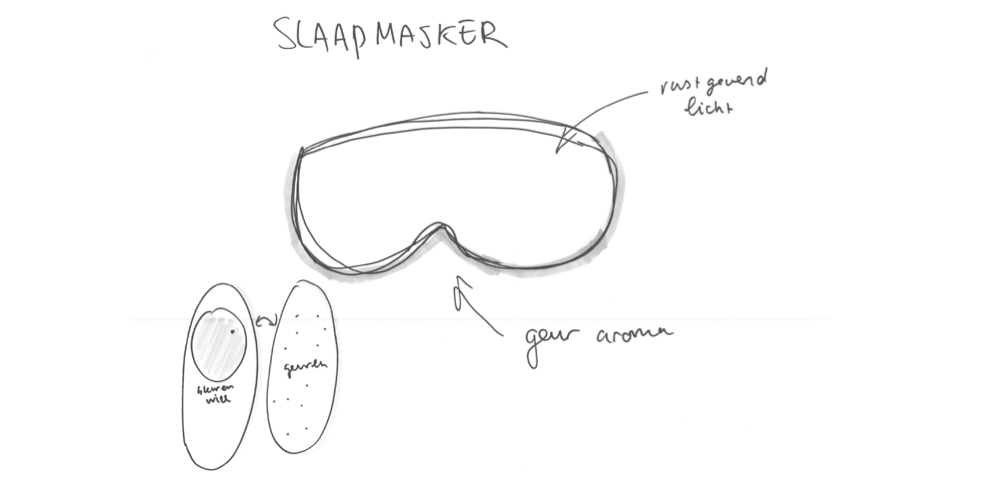
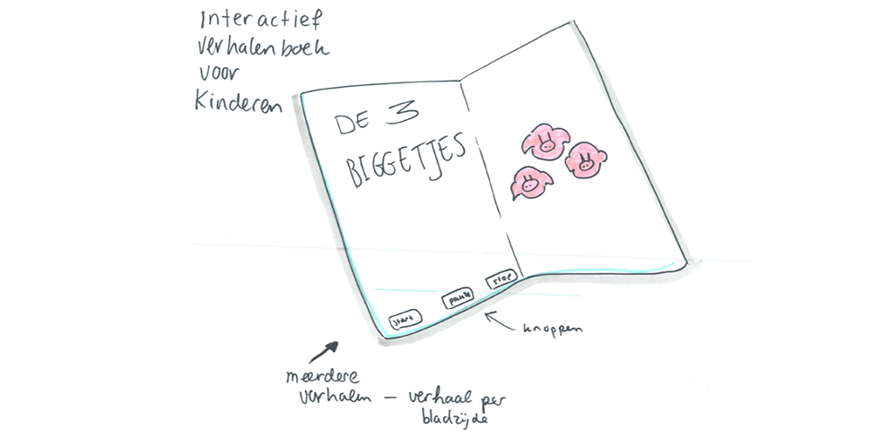
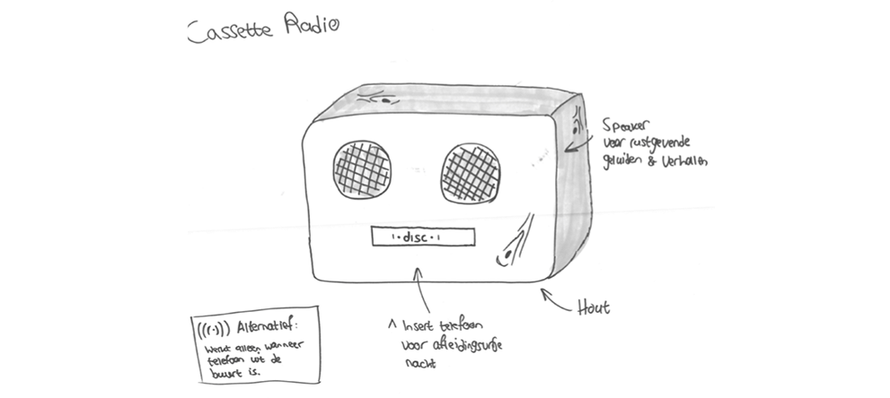
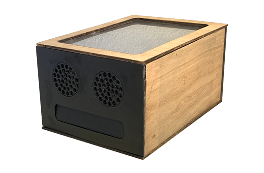
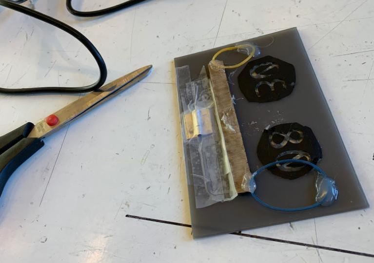
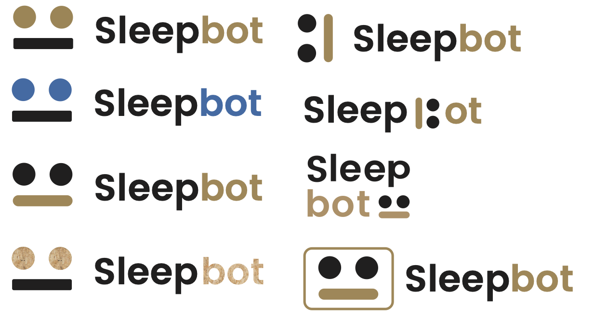

Project Team
Project beschrijving
Één van de projecten waar ik erg trots op was, was Project Slaap uit Blok 3 van de Propedeuse. Aan dit project heb ik samengewerkt met Lars Ruijs, Salomé de Ruiter en Enzo van Leeuwen. Als team hebben wij een fysiek object met een digitaal component ontworpen dat studenten helpt beter in slaap te komen door de telefoon tijdens het slapen buiten de slaapkamer te houden.
Deliverables
- Fysiek object/prototype
- One pager
- Video
- Procesboek
Proces
Eerste Concepten
Wij hadden een slaapmasker bedacht die geur zou afgeven en licht zou geven die de slaap stimuleert. Wij hebben niet voor dit concept hebben gekozen, omdat het ons niet een fijn idee leek voor de gebruiker om een masker op het hoofd te hebben tijdens het slapen. Dit concept was bedacht voor de doel-groep studenten.
Dit concept hadden wij voor de doelgroep kinderen bedacht. Dit zou een verhaaltjes boek zijn voor kinderen die uit logeren gaan, en hun ouders missen. Als zij dan niet zouden kunnen slapen, zou dit verhaaltjes boek hen uit eindelijk helpen in slaap te vallen.
Wij hadden eerst het idee van een cassette, waarin de telefoon kon worden gedaan zodat studenten niet meer ‘s nachts op hun telefoon zou-den zitten, en hierdoor beter kunnen slapen. Tijdens een andere workshop is dit idee verandert naar een robot, waar de telefoon in kan en meer. Dit concept hebben wij uiteindelijk gekozen.
Prototype
Het prototype is gemaakt van dun hout en plastic. Ik heb samen met Lars Ruijs een aantal dagen in het MakersLab van het Benno Premsela Huis gezeten en daar met de laserprinter alle onderdelen uitgesneden en in elkaar gezet. De ogen/speakers hebben we zo uigesneden dat het op echte speakers lijkt. De mond hebben we bij de binnenkant met een scharnier en elastiekjes vastgezet.
Aan de binnenkant hadden wij nog ledlampjes gestopt voor de lichteffecten en een powerbank voor de energie.
Logo
Het idee om het logo te laten lijken op het product, werd als goed idee ervaren. Het logo is simpel, maar met het icoon werkt het erg krachtig, óók wanneer het logo erg klein wordt weergegeven. De ogen en de mond kunnen direct een associatie met het product oproepen.
Gekozen logo
One Pager

Uieindelijk heeft Lars Ruijs voor ons product een One Pager in elkaar gezet waarop het hele product staat uitgelegd samen met de video die Enzo van Leeuwen heeft gefilmd en geëdit: One Pager
Eindoplevering
Voor de eindoplevering hebben we een presenatie gehad aan de hand van de One Pager en het fysieke prototype. Ook moesten wij een productbiografie inleveren met het proces. Uiteindelijk hebben wij voor dit project een 8 gekregen.